Chapter 7 Exploratory Data Analysis
7.1 Skip section
7.2 Questions
Two important questions to guide your data exploration:
- What type of variation occurs within my variables?
- What type of covariation occurs between my variables?
7.3 Variation
Variation is the tendency of the values of a variable to change from measurement to measurement. The best way to understand pattern is to visualise the distribution of the variable’s values.
7.3.1 Visualising distributions
How you visualise the distribution of a variable depends on whether the variable is categorical or continuous. To examin the distribution of categorical variables, use a var chart:

The height of the bars displays how many observations occurred with each x value. You can also compute this number manually using dplyr::count()
## # A tibble: 5 x 2
## cut n
## <ord> <int>
## 1 Fair 1610
## 2 Good 4906
## 3 Very Good 12082
## 4 Premium 13791
## 5 Ideal 21551To examine the distribution of a continuous variable, use a histogram:

You can compute this by hand by combining dplyr::count() and ggplot2::cut_width().
## # A tibble: 11 x 2
## `cut_width(carat, 0.5)` n
## <fct> <int>
## 1 [-0.25,0.25] 785
## 2 (0.25,0.75] 29498
## 3 (0.75,1.25] 15977
## 4 (1.25,1.75] 5313
## 5 (1.75,2.25] 2002
## 6 (2.25,2.75] 322
## 7 (2.75,3.25] 32
## 8 (3.25,3.75] 5
## 9 (3.75,4.25] 4
## 10 (4.25,4.75] 1
## 11 (4.75,5.25] 1You should always play with different binwidths when making histograms, as different binwidths can reveal different patterns.
# take only the diamonds with less than 3 carats
smaller <- diamonds %>%
filter(carat < 3)
ggplot(data=smaller, mapping=aes(x=carat)) +
geom_histogram(binwidth = 0.1)
If you wish to overlay multiple histograms in the same plot, use geom_freqpoly() instead of geom_histogram(). geom_freqpoly() performs the same calculation as geom_histogram(), but instead of displaying the counts with bars, uses lines instead. It’s much easier to understand overlapping lines than bars.

7.3.2 Typical values
Asking questions about the frequency of values are useful in data exploration. You can look for anything unexpected with questions like:
- which values are the most common? why?
- which values are rare? why? does that match your expectations?
- can you see any unusual patterns? what might explain them?
As an example, the histogram below suggests several intersting questions:
- why are there more diamonds at whole carats and common fractions of carats?
- why are there more diamonds slightly to the right of each peak than there are slightly to the left of each peak?
- why are there no diamonds bigger than 3 carats?

Clusters of similar values suggest that subgroups exist in your data. To understand the subgroups, ask:
- how are the observations within each cluster similar to each other?
- how are the observations in separate clusters different from each other?
- how can you explain or describe the clusters?
- why might the appearance of clusters be misleading?
The histogram below shows the length (in minutes) of 272 eruptions of the Old Faithful Geyser in Yellowstone National Park. Eruption times appear to be clustered into two groups: there are short eruptions (of around 2 minutes) and long eruptions (4-5 minutes), but little in between.
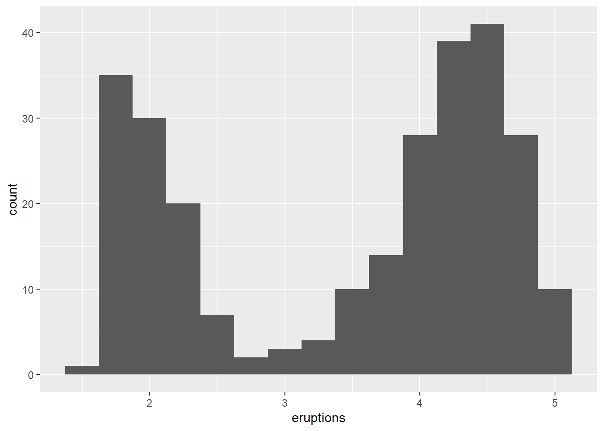
Many of the questions above will prompt you to explore a relationship between variables.
7.3.3 Unusual values
Sometimes outliers are difficult to spot on histograms. Take the distribution of the y variable from the diamonds dataset. The only evidence of outliers is the unusually wide limits on the x-axis.
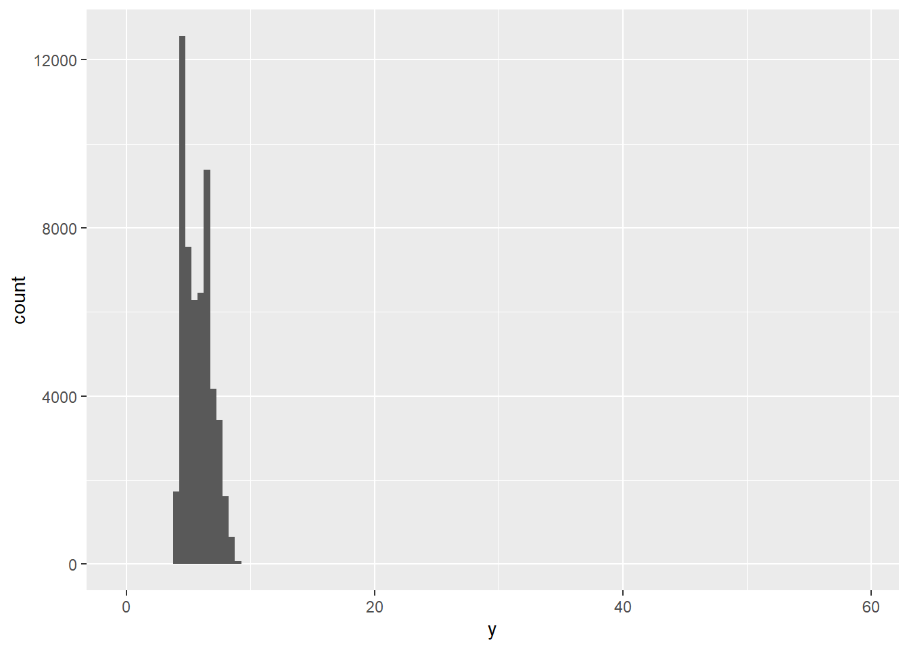
There are so many observations in the common binds, that the rare bins are so short that you can’t see them. To make things easier to see, we can zoom into the small values of the y-axi using cood_cartesian().
ggplot(diamonds) +
geom_histogram(mapping = aes(x=y), binwidth=0.5) +
coord_cartesian(ylim = c(0, 50))
coord_cartesian() also has an xlim() argument to zoom into the x-axis. ggplot2 also has xlim() and ylim() functions that work slightly differently and throw away the data outside the limits.
## Warning: Removed 11 rows containing missing values (geom_bar).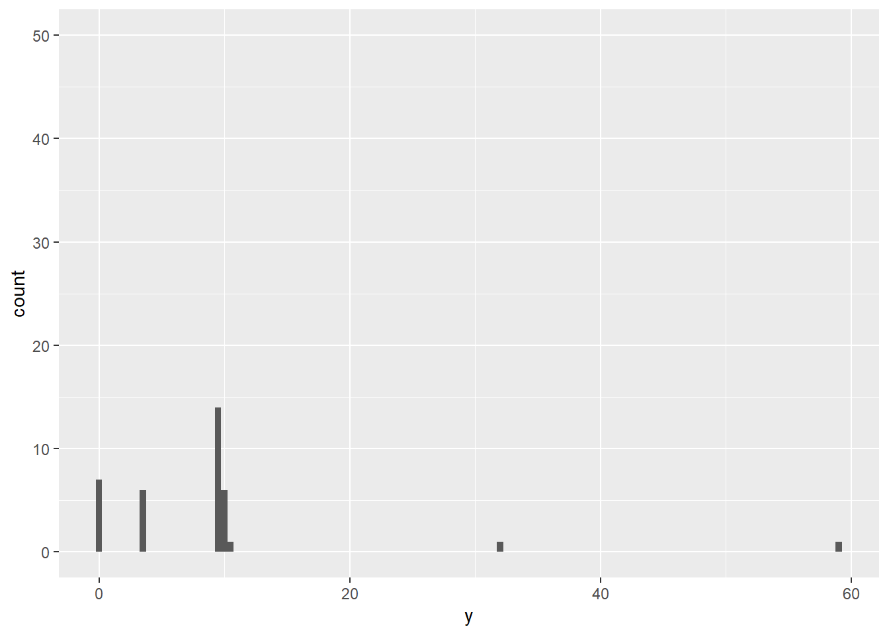
You can see that the data has been removed when using the ggplot2 ylim function.
There appears to be three unusual values: 0, ~30, and ~60. We pluck them out with dplyr:
## # A tibble: 9 x 4
## price x y z
## <int> <dbl> <dbl> <dbl>
## 1 5139 0 0 0
## 2 6381 0 0 0
## 3 12800 0 0 0
## 4 15686 0 0 0
## 5 18034 0 0 0
## 6 2130 0 0 0
## 7 2130 0 0 0
## 8 2075 5.15 31.8 5.12
## 9 12210 8.09 58.9 8.06The y variable measures one of the three dimensions of these diamonds, in mm. We know that diamonds can’t have a width of 0mm, so these values must be incorrect. We might also suspect that the measurements of 32mm and 59mm are implausible: those diamonds are over an inch long, but don’t cost hundres of thousands of dollars!
It’s good practice to repeat your analysis with and without the outliers. If they have minimal effect on the results, and you can’t figure out why they’re there, it’s reasonable to replace them with missing values, and move on. However, if they have a substantial effect on your results, you shouldn’t drop them without justification. You’ll need to figure out what caused them (e.g. a data entry error) and disclose that you removed them in your write-up.
7.3.4 Excercises
- Explore the distribution of each of the x, y, and z variables in
diamonds. What do you learn? Think about a diamond and how you might decide which dimension is the length, width, and depth.
diamonds %>%
gather(key='dimension', value='value', x:z) %>%
ggplot() +
geom_histogram(aes(x=value,
fill=dimension),
binwidth = 0.5) +
facet_wrap(. ~ dimension, ncol=1) +
coord_cartesian(xlim=c(1,10))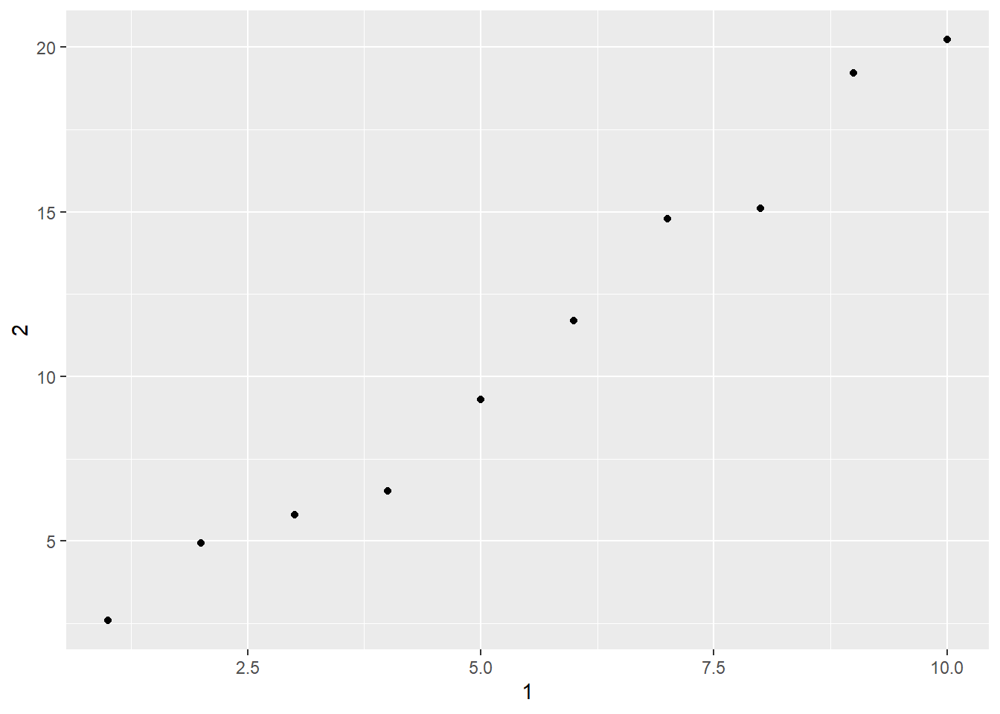
We see that the z dimension tends to be smaller than the x or y dimensions. The x and y dimensions are similarly distrbuted. We typically see diamonds cut with circular profiles and varying height. We might therefore guess that the width and length are along the x and y axes, while the height is along the z-axis.
- Explore the distribution of
price. Do you discover anything unusual or surprising? (Hint: Carefully think about thebinwidthand make sure you try a wide range of values.)

There is an interesting gap in the distribution right at 1500 that is visible with binwidth 100.
- How many diamonds are 0.99 carat? How many are 1 carat? What do you think is the cause of the difference?
## `stat_bin()` using `bins = 30`. Pick better value with `binwidth`.
There is no difference between diamonds that are 0.99 carat or 1 carat. It is probably difficult to distinguish these categories.
- Compare and contrast
coord_cartesian()vsxlim()orylim()when zooming in on a histogram. What happens if you leave binwidth unset? What happens if you try and zoom so noly half a bar shows?
coord_cartesian() will not cut out data if it does not fit in the plot window, whereas xlim() and ylim() will cut out data if it’s entire plotting region is not shown in the window.
7.4 Missing values
You might want to replace missing values in a dataframe with NA values. You can use the ifelse() function to do this.
There are three arguments for ifelse(), the first argument test should be a logical vector. The result will contain the value of the second argument yes whe test is TRUE, and the value of the third argument no, when it is false.
Alternatively, you can use dplyr::case_when(), which is particularly usefule inside mutate when you want to create a new variable that relies on a complex combination of existing variables.
Other times, you might want to understand what makes observations with missing values different to observations with recorded values. For example, in nycflights13::flights, missing values in the dep_time variable indicate that the flight was cancelled. So you might want to compare the scheduled departure times for cancelled and non-cancelled times.
nycflights13::flights %>%
mutate(
cancelled = is.na(dep_time),
sched_hour = sched_dep_time %/% 100,
sched_min = sched_dep_time %% 100,
sched_dep_time = sched_hour + sched_min / 60
) %>%
ggplot(mapping = aes(sched_dep_time)) +
geom_freqpoly(mapping = aes(colour = cancelled), binwidth = 1/4)
7.4.1 Exercises
- What happens to missing values in a histogram? What happens to missing values in a bar chart? Why is there a difference?
## [1] 9ggplot(diamonds2, alpha=0.7) +
geom_histogram(aes(x=y), fill='chocolate1') +
geom_bar(aes(x=y), fill='cornflowerblue')## `stat_bin()` using `bins = 30`. Pick better value with `binwidth`.## Warning: Removed 9 rows containing non-finite values (stat_bin).## Warning: Removed 9 rows containing non-finite values (stat_count). In both cases, the missing values are removed with a warning.
In both cases, the missing values are removed with a warning.
- What does
na.rm = TRUEdo inmean()andsum()?
## [1] NA## [1] 5.733801## [1] NA## [1] 309229.6With both mean and sum, if there are missing values, the output will be NA. When we use na.rm = TRUE, the missing values are removed and we can get a numeric answer returned.
7.5 Covariation
If variation describes the behavior within a variable, covariation describes the behavior between variables. Covariation is the tendency for the values of two or more variables to vary together in a related way. The best way to spot covariation is to visualize the relationship between two or more variables. How you do that should again depend on the type of variables involved.
7.5.1 A categorical and continuous variable
It’s common to want to explore the distribution of a contious variable broken down by a categorical variable, as in the previous frequency polygon. The default appearance of geom_freqpoly() is not that useful for that sort of comparison because the height is given by the count. That means if one of the groups is much smaller than the others, it’s hard to see the differences in shape. For example, let’s explore how the price of a diamond varies with its quality:
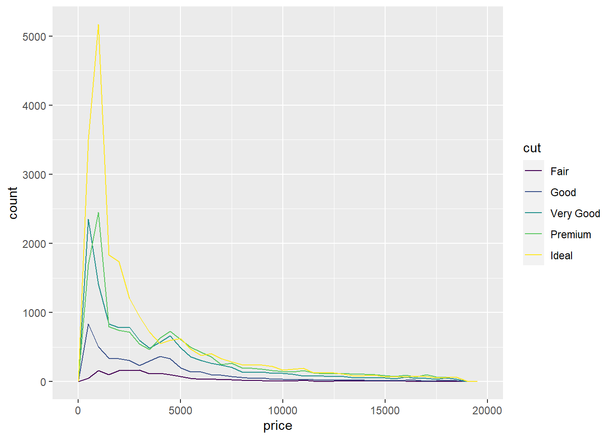
It’s hard to see the difference in distributions because the overall counts differ so much:

To make the comparison easier, we can sawp what is displayed on the y-axis. Instead of displaying count, we’ll display density, which is the count standardised so that the area under each frequency polygon is one.
ggplot(diamonds, mapping=aes(x=price, y=..density..)) +
geom_freqpoly(mapping=aes(colour=cut), binwidth=500)
Another alternative to display the distribution of a continous variable broken down by a categorical variable is the boxplot. A boxplot is a type of visual shorthand for a distribution of values that is popular among statisticians.
Let’s take a look at the distribution of price by cut using geom_boxplot()

cut is an ordered factor: fiar is worse than good, which is worse than very good, and so on. Many categorical variables don’t have such an intrinsic order, so you might want to reorder them to make a more informative display. One way to do that is with the reorder() function.
For example, take the class varialbe in the mpg dataset. You might be interested to know how highway mileage varies across classes:

To make the trend easier to see, we can reorder class based on the median value of hwy:

If you have long variable names, geom_boxplot() will work better for you if you flip is 90 degrees. You can do that with coord_flip()

7.5.1.1 Exercises
- Use what you’ve learned to improve the visualization of the departure times of cancelled vs. non-cancelled flights.
nycflights13::flights %>%
mutate(
cancelled = is.na(dep_time),
sched_hour = sched_dep_time %/% 100,
sched_min = sched_dep_time %% 100,
sched_dep_time = sched_hour + sched_min / 60
) %>%
ggplot(mapping = aes(x=cancelled, y=sched_dep_time)) +
geom_boxplot(aes(color=cancelled))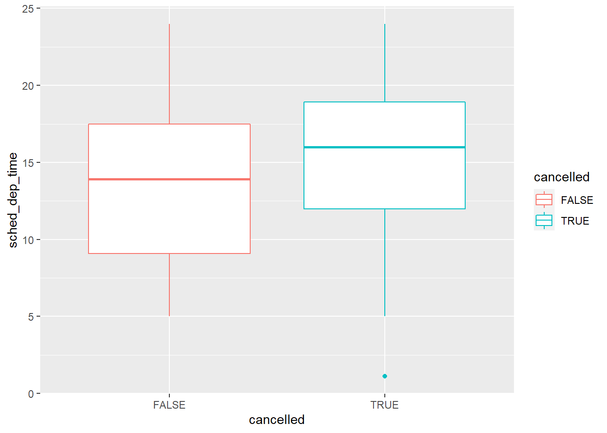
- What variable in the diamonds dataset is the most important for predicting the price of a diamond? How is that variable correlated with cut? Why does the combination of those two relationships lead to lower quality diamonds being more expensive?
## # A tibble: 6 x 10
## carat cut color clarity depth table price x y z
## <dbl> <ord> <ord> <ord> <dbl> <dbl> <int> <dbl> <dbl> <dbl>
## 1 0.23 Ideal E SI2 61.5 55 326 3.95 3.98 2.43
## 2 0.21 Premium E SI1 59.8 61 326 3.89 3.84 2.31
## 3 0.23 Good E VS1 56.9 65 327 4.05 4.07 2.31
## 4 0.29 Premium I VS2 62.4 58 334 4.2 4.23 2.63
## 5 0.31 Good J SI2 63.3 58 335 4.34 4.35 2.75
## 6 0.24 Very Good J VVS2 62.8 57 336 3.94 3.96 2.48# separate categorical features
new_diamonds <- diamonds %>%
gather(key=feature, value=value, -price) %>%
mutate(feature_type = ifelse(feature %in% c('cut', 'color', 'clarity'),
'cat', 'cont'))## Warning: attributes are not identical across measure variables;
## they will be droppedcats <- new_diamonds %>%
filter(feature_type == 'cat')
cont <- new_diamonds %>%
filter(feature_type == 'cont')
# plot the continuous features against price to visualize relationships
ggplot(cont) +
geom_point(aes(x=value, y=price)) +
facet_wrap(. ~ feature, scales='free_x')
# plot categorical features
ggplot(cats) +
geom_boxplot(aes(x=value, y=price)) +
facet_wrap(. ~ feature, scales='free')
##
## Call:
## lm(formula = price ~ ., data = diamonds)
##
## Residuals:
## Min 1Q Median 3Q Max
## -21376.0 -592.4 -183.5 376.4 10694.2
##
## Coefficients:
## Estimate Std. Error t value Pr(>|t|)
## (Intercept) 5753.762 396.630 14.507 < 2e-16 ***
## carat 11256.978 48.628 231.494 < 2e-16 ***
## cut.L 584.457 22.478 26.001 < 2e-16 ***
## cut.Q -301.908 17.994 -16.778 < 2e-16 ***
## cut.C 148.035 15.483 9.561 < 2e-16 ***
## cut^4 -20.794 12.377 -1.680 0.09294 .
## color.L -1952.160 17.342 -112.570 < 2e-16 ***
## color.Q -672.054 15.777 -42.597 < 2e-16 ***
## color.C -165.283 14.725 -11.225 < 2e-16 ***
## color^4 38.195 13.527 2.824 0.00475 **
## color^5 -95.793 12.776 -7.498 6.59e-14 ***
## color^6 -48.466 11.614 -4.173 3.01e-05 ***
## clarity.L 4097.431 30.259 135.414 < 2e-16 ***
## clarity.Q -1925.004 28.227 -68.197 < 2e-16 ***
## clarity.C 982.205 24.152 40.668 < 2e-16 ***
## clarity^4 -364.918 19.285 -18.922 < 2e-16 ***
## clarity^5 233.563 15.752 14.828 < 2e-16 ***
## clarity^6 6.883 13.715 0.502 0.61575
## clarity^7 90.640 12.103 7.489 7.06e-14 ***
## depth -63.806 4.535 -14.071 < 2e-16 ***
## table -26.474 2.912 -9.092 < 2e-16 ***
## x -1008.261 32.898 -30.648 < 2e-16 ***
## y 9.609 19.333 0.497 0.61918
## z -50.119 33.486 -1.497 0.13448
## ---
## Signif. codes: 0 '***' 0.001 '**' 0.01 '*' 0.05 '.' 0.1 ' ' 1
##
## Residual standard error: 1130 on 53916 degrees of freedom
## Multiple R-squared: 0.9198, Adjusted R-squared: 0.9198
## F-statistic: 2.688e+04 on 23 and 53916 DF, p-value: < 2.2e-16Based on the plots and the lm output, carat seems to have a huge effect on the price of a diamon as well.
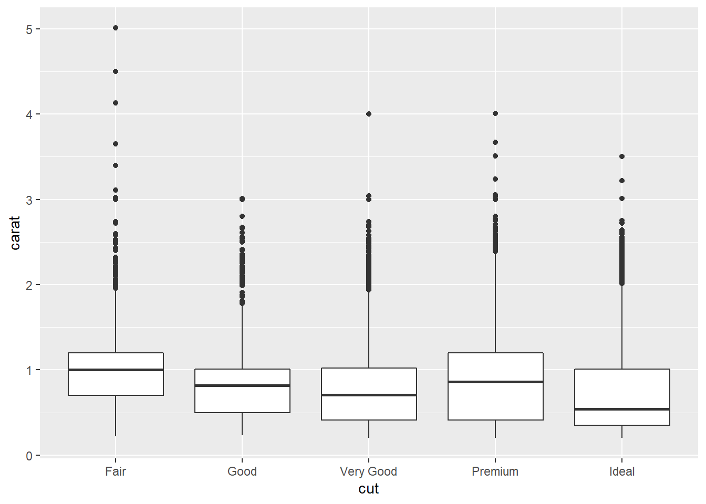
We see that the carat value tends to be higher for the Fair cut diamonds. This combination of high carats with Fair cuts drives prices higher for lower quality cuts.
- Install the ggstance package, and create a horizontal boxplot. How does this compare to using
coord_flip?

# Horizontal with coord_flip()
ggplot(mpg, aes(class, hwy, fill = factor(cyl))) +
geom_boxplot() +
coord_flip()Both methods produce the same plots, but the syntax to create these differ. The ggstance syntax is a bit more intuitive, but doesn’t make a huge difference.
- One problem with boxplots is that they were developed in an era of much smaller datasets and tend to display a prohibitively large number of “outlying values”. One approach to remedy this problem is the letter value plot. Install the lvplot package and try to use
geom_lv()to display the distribution of price vs cut. What do you learn? How do you interpret the plots?
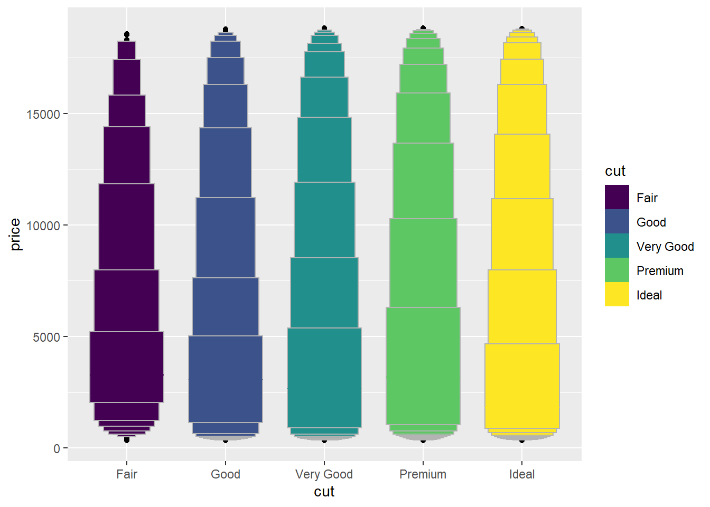
These letter-value plots give us more information beyond the quantiles of the boxplot. We see that the middle box represents the same information as boxplots, and each subsequent box that branches off of the middle encompasses 50% of the remaining data. We see that the boxes stretch further for the Very Good and Premium cuts, meaning that more people are paying higher values for those cuts. When a box is short, it means that more people are not paying very much more than the last value depicted by the previous box. These plots give us more information about the distribution of outliers and it makes sense to visualize larger data where outliers will be more numerous. One misleading feature is that the width of the boxes do not represent anything. It seems like violin plots are more intuitive than these letter-value plots.
Compare and contrast
geom_violin()with a facettedgeom_histogram(), or a colouredgeom_freqpoly(). What are the pros and cons of each method?If you have a small dataset, it’s sometimes useful to use
geom_jitter()to see the relationship between a continous and categorical variable. The ggbeeswarm package provides a number of methods similar togeom_jitter(). List them and briefly describe what each one does.
7.5.2 Two Categorical variables
To visualize covariation between categorical variables, you’ll need to count the number of observations for each combination. One way to do this is to use geom_count():

The size of each circle represents the count at each categorical combination. Covariation will appear as strong correlation between specific x values and specific y values.
Another approach is to compute the count with dplyr:
## # A tibble: 35 x 3
## color cut n
## <ord> <ord> <int>
## 1 D Fair 163
## 2 D Good 662
## 3 D Very Good 1513
## 4 D Premium 1603
## 5 D Ideal 2834
## 6 E Fair 224
## 7 E Good 933
## 8 E Very Good 2400
## 9 E Premium 2337
## 10 E Ideal 3903
## # ... with 25 more rowsThen visualize with geom_tile() and the fill aesthetic:
diamonds %>%
count(color, cut) %>%
ggplot(mapping = aes(x=color, y=cut)) +
geom_tile(mapping = aes(fill=n))
If the categorical variables are unordered, you might want to use the seriation package to simultaneously reorder the rows and columns in order to more clearly reveal interesting patterns. For larger plots, you might want to try d3heatmap or heatmaply packages, which create interactive plots.
7.5.2.1 Exercises
- How could you rescale the count dataset above to more clearly show the distribution of cut within colour, or colour within cut?
diamonds %>%
count(color, cut) %>%
mutate(log_n = log10(n)) %>%
ggplot(mapping = aes(x=color, y=cut)) +
geom_tile(mapping = aes(fill=log_n))
We can take log values to get a better idea of how the counts are distributed.
- Use
geom_tile()together with dplyr to explore how average flight delays vary by destination and month of year. What makes the plot difficult to read? How could you improve it?
flights %>%
group_by(dest, month) %>%
filter(!is.na(dep_delay)) %>%
summarise(delays=mean(dep_delay)) %>%
ggplot(aes(x=month, y=dest)) +
geom_tile(aes(fill=delays))## `summarise()` has grouped output by 'dest'. You can override using the `.groups` argument.
There were a lot of NA values that made the plot very difficult to read. After removing them, we have a cleaner plot that we could save to a larger file which would be readable. There are still many destinations that make this plot crowded. If we could filter these down to those that we care about or group them, we’d have a cleaner plot. The months would also make more sense if they were factors rather than numerical.
- Why is it slightly better to use
aes(x=color, y=cut)rather thanaes(x=cut, y=color)in the example above?

7.5.3 Two continuous variables
One great way to visualize the covariation between two continuous variables is with a scatter plot. For example, we can easily see an exponential relationship between the carat size and price of a diamon.
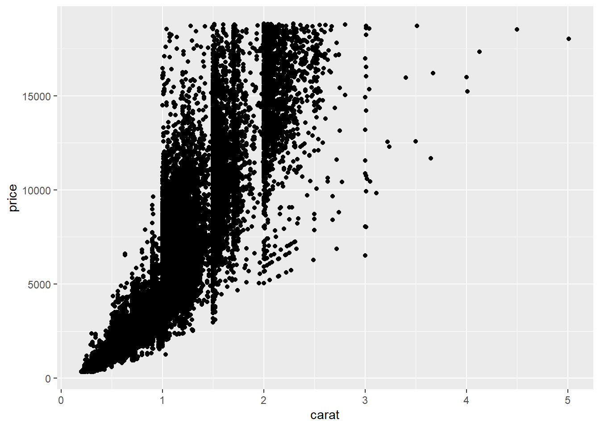
However, scatterplots become less useful as the size of your dataset grows, becaus epoint begin to overplot and pile up into areas of uniform black (as above). You can add the alpha aesthetic to add transparency to help with this.
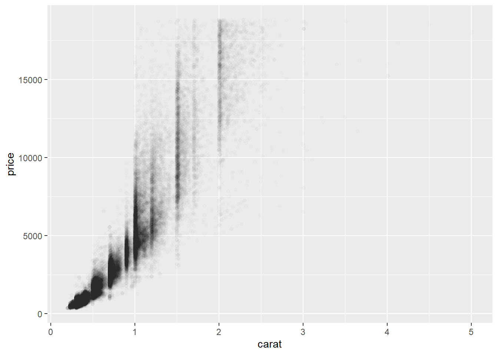
Using transparency can be challenging for very large datasets. Another solution is to use bin. Previously you used geom_histogram() and geom_freqpoly() to bin in one dimension. Now you’ll learn how to use geom_bin2d() and geom_hex() to bin in two dimensions.
geom_bin2d() and geom_hex() divide the coordinate plane into 2d bins and then use a fill color to display how many points fall into each bin. geom_bin2d() creates rectangular bins. geom_hex() creates hexagonal bins. You need to install the hexbin package to use geom_hex().

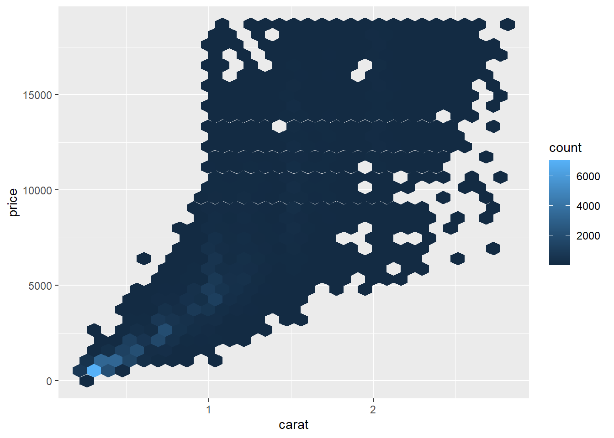
Another option is to bin one continuous variable so it acts like a categorical variable. Then you can use one of the technique for visualising the combination of a categorical and continuous variable that you learned about. For example, you could bin carat and then for each group, display a boxplot:
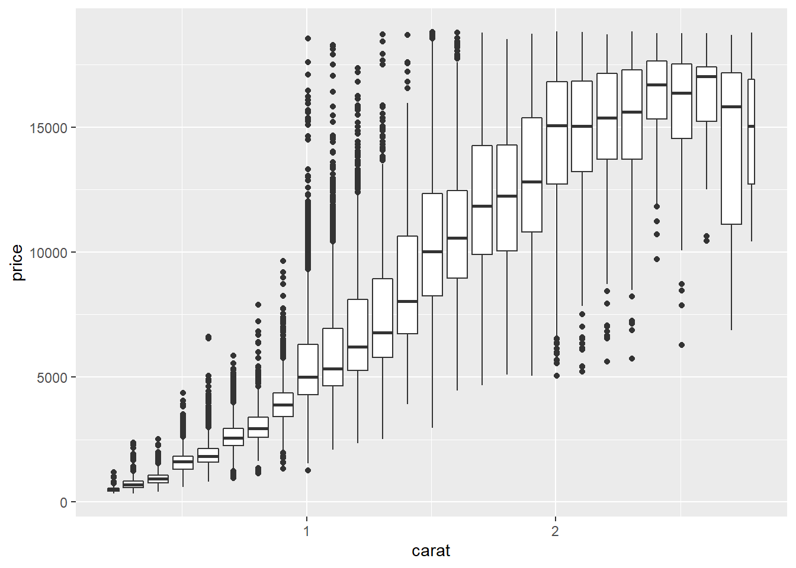
cut_width(x, width) as used above, divides x into bind of width width. By default, boxplots look roughly the same (apart from the number of outliers) regardless of how many observations there are, so it’s difficult to tell that each boxplot summarises a different number of points. One way to show that is to make the width of the boxplot proportional to the number of points with varwidth=TRUE.
ggplot(smaller, aes(x=carat, y=price)) +
geom_boxplot(aes(group=cut_width(carat, 0.1)), varwidth=TRUE)Another approach is to display approximately the same number of points in each bin. That’s the job of cut_number():

7.5.3.1 Exercises
- Instead of summarising the conditional distribution with a boxplot, you could use a frequency polygon. What do you need to consider when using
cut_width()vscut_number()? How does that impact a visualisation of the 2d distribution ofcaratandprice?
cut_width() will give you even bin sizes, but it won’t take into account the number of points within each of those bins. You could use cut_width() in combination with varwidth=TRUE to give an idea of how many points are within each bin. cut_number() will give you bins with the same number of points in the, but the sizes of each bin will differ from one another. If you have bins with unequal numbers of points in them, then it would be more informative to plot this information in the plot. We can see in the plots above how these two different option look. cut_number() offers a much more apparent reflection of the different number of points contained within regions.
- Visualise the distribution of carat, partitioned by price.

- How does the price distribution of very large diamonds compare to small diamonds? Is it as you expect, or does it surprise you?
# create column for size
diamonds %>%
mutate(size=x*y*z) %>%
ggplot() +
geom_hex(aes(x=size, y=price))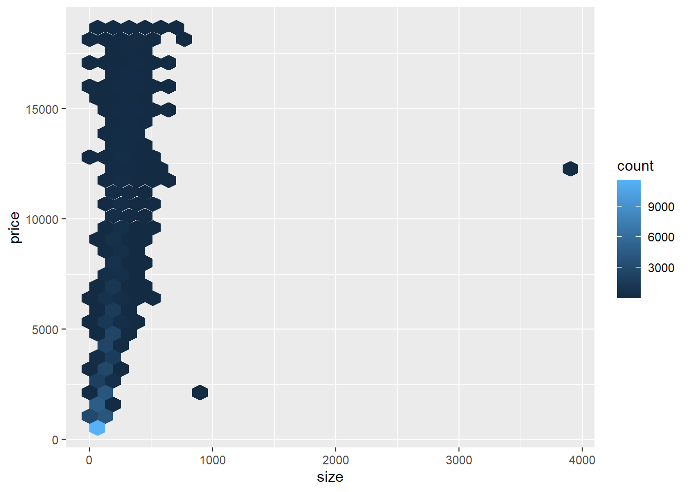
For the most part, the price increases as size increases. There are a couple of point on this plot that show some diamonds with very large size and relatively low price. The price of these outlier points do not appear to be fully dependent on size.
- Combine two of the techniques you’ve learned to visualize the combined distribution of cut, carat, and price.

- Two dimensional plots reveal outliers that are not visible in one dimonsional plots. For example, some points in the plot below have an unusual combination of x and y values, which makes the points outliers even though their x and y values appear normal when examined separately.
ggplot(data = diamonds) +
geom_point(mapping = aes(x = x, y = y)) +
coord_cartesian(xlim = c(4, 11), ylim = c(4, 11))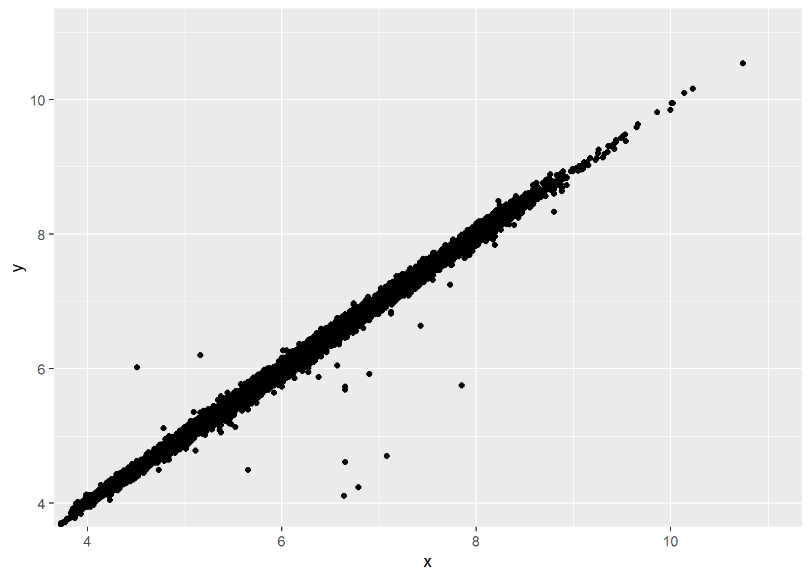
Why is a scatterplot a better display than a binned plot for this case?
The scatterplot is a better choice here because a binned plot tends to hide the outliers in the bins. For example, in the plot below, you can still see these outliers, but they do not stand out as much as in the scatter plot.
ggplot(data = diamonds) +
geom_boxplot(mapping = aes(x = x, y = y, group=cut_number(x, 10))) +
coord_cartesian(xlim = c(4, 11), ylim = c(4, 11))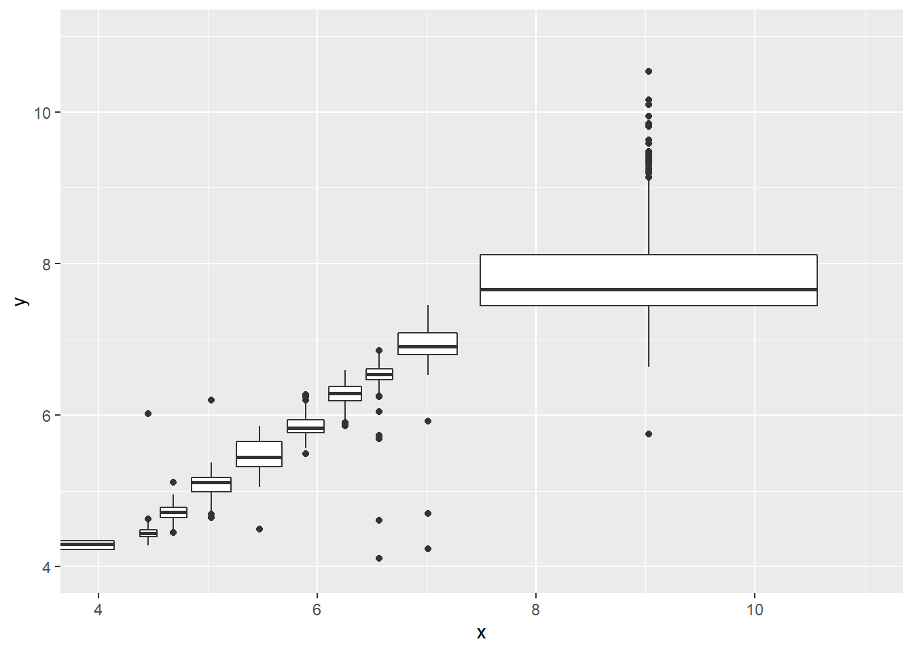
7.6 Skip section
Not a lot of coding here so skipping these sections.
7.7 Skip section
Not a lot of coding here so skipping these sections.
Xie, Yihui. 2015. Dynamic Documents with R and Knitr. 2nd ed. Boca Raton, Florida: Chapman; Hall/CRC. http://yihui.org/knitr/.
———. 2021. Bookdown: Authoring Books and Technical Documents with R Markdown. https://CRAN.R-project.org/package=bookdown.